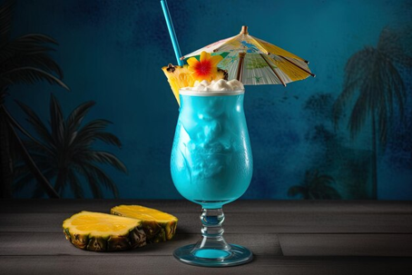
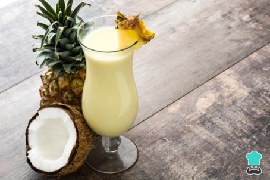
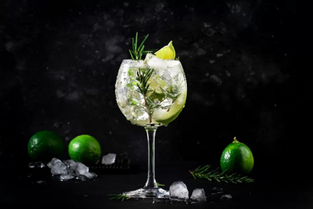
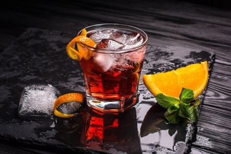
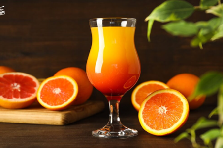
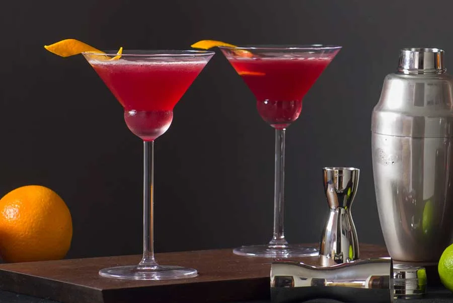

LAS MEJORES RECETAS DE COCTELES
Recetas

Blue Hawaiia
- Tiempo de preparación: 5 minutos
- Tiempo total: 5 minutos
- Raciones: 1
- Categoría: cócteles
- Tipo de cocina: tiki
- Calorías por ración (kcal): 283

Piña Colada
- Tiempo de preparación: 10 minutos
- Tiempo total: 10 minutos
- Raciones: 1
- Categoría: cócteles
- Tipo de cocina: puertorriqueña
- Calorías por ración (kcal): 212

Gin Tonic
- Tiempo de preparación: 5 minutos
- Tiempo total: 5 minutos
- Raciones: 1
- Categoría: bebidas
- Tipo de cocina: inglesa
- Calorías por ración (kcal): 221

Negroni
- Tiempo de preparación: 10 minutos
- Tiempo total: 10 minutos
- Raciones: 1
- Categoría: bebidas
- Tipo de cocina: italiana
- Calorías por ración (kcal): 173

San Francisco
- Tiempo de preparación: 10 minutos
- Tiempo total: 10 minutos
- Raciones: 1
- Categoría: bebidas
- Tipo de cocina: internacional
- Calorías por ración (kcal): 180 kcal por copa

Cosmopolitan
- Tiempo de preparación: 5 minutos
- Tiempo total: 5 minutos
- Raciones: 1
- Categoría: cócteles
- Tipo de cocina: estadounidense
- Calorías por ración (kcal): 153